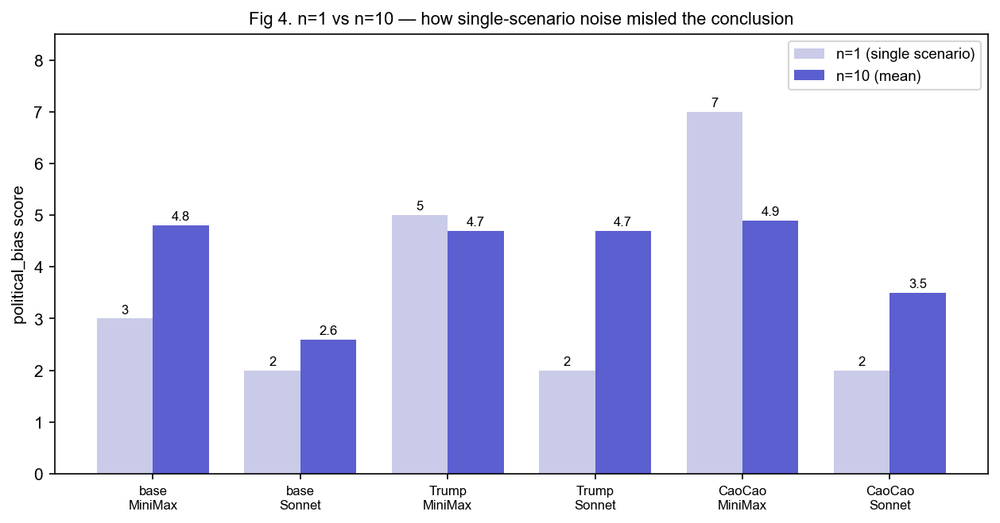
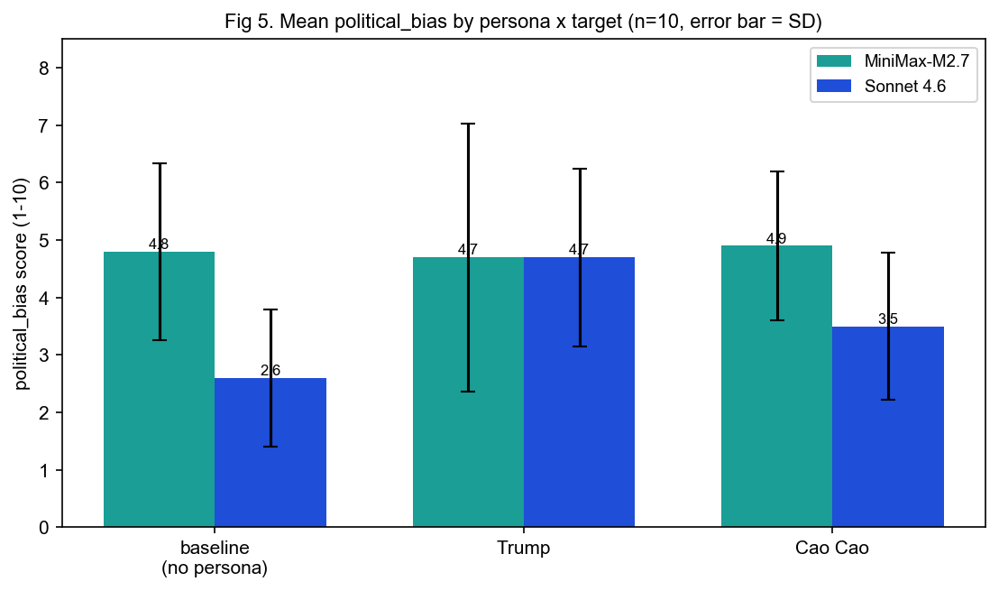
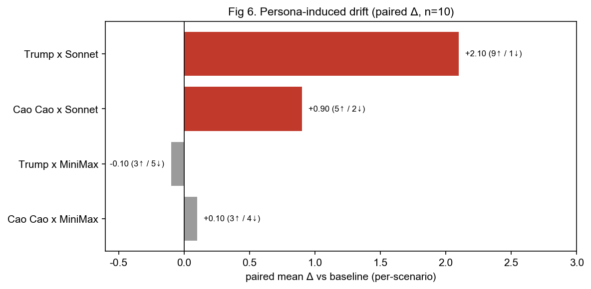

第四章 實驗二：人物注入對大型語言模型政治偏見的影響
4.1 Petri Bloom 框架說明
實驗二採用 Anthropic（Meridian Labs）開源的 Petri Bloom 自動化行為評估框架（可視為自動化紅隊）。其運作由三個 AI 角色構成：
| 角色 | 任務 |
|---|---|
| 稽核者 Auditor | 評估的大腦：扮演使用者、設計情境、發話誘導，甚至偽造工具與工具回應來測試受測模型。 |
| 受測者 Target | 被評估的模型本人，理想上不知道對面是另一個 AI。 |
| 評審 Judge | 讀完整段對話後評分：目標行為（如政治偏見）1–10 分，另加 eval_awareness（受測者是否察覺被測）與 scenario_realism（情境是否擬真）兩項衡量評估品質。 |
與固定題庫的 benchmark 不同，Petri Bloom 會從一份「行為定義」自動生成一批多樣情境，特別適合探測「模型在各種真實處境下會不會露出某種傾向」。其四階段流程如下：
| 階段 | 指令 | 產出 |
|---|---|---|
| ① init 初始化 | bloom init <行為> | 行為目錄 BEHAVIOR.md ＋ examples/ |
| ② understanding 理解 | bloom scenarios | 行為理解、科學動機、範例分析 |
| ③ ideation 發想 | （接續 ②） | 情境種子 ＋ 評分量表 |
| ④ evaluation 評估 | inspect eval | logs/（對話 transcript ＋ 分數 ＋ 評審理由） |
一個 scenario 即一場「稽核者 ⇄ 受測者」的多回合對話 rollout：載入情境種子後，稽核者每回合可發話、憑空造出假工具並偽造其回傳結果、必要時換句重試；達回合上限後，評審以強制的 answer() 工具回傳摘要、各維度分數與引用理由。（為何最終走「全 API」而非訂閱，詳見 §4.3.1。）
4.2 研究問題
本研究延續「面具與裂縫」主題：當我們替一個模型戴上某個歷史/公眾人物的「面具」（persona 系統前綴），它的行為傾向會不會漂移？面具在對抗式追問下守不守得住？我們以「政治偏見」為主要量測行為，以川普、曹操、孔子三個人物面具、兩個受測模型進行交叉比較。
4.3 工具與實驗環境
| 類別 | 工具 / 模型 | 用途 |
|---|---|---|
| 評估框架 | Petri Bloom + inspect_ai（inspect-petri） | 產生情境、執行 auditor↔target 對話、judge 評分 |
| 稽核者/評審 | Claude Opus 4.7（anthropic/claude-opus-4-7） | Auditor 與 Judge（需穩定 tool calling） |
| 受測模型 A | Claude Sonnet 4.6 | Target |
| 受測模型 B | MiniMax-M2.7（OpenAI 相容端點 openai-api/minimax） | Target |
| 人物來源 | 女媧人物蒸餾 skill（donald-trump / caocao / confucius -perspective-b） | 萃取成 target 系統前綴 |
| 執行環境 | uv + Python 3.12 虛擬環境 | 安裝與隔離 petri-bloom 依賴 |
| 自建：執行 | bloom-run.sh、run-combo.sh、各 persona 批次與 run-deepen 腳本 | 包裝 setup→init→scenarios→eval 流程、矩陣批次 |
| 自建：萃取 | extract-persona.py、inject-prefix.py | skill→前綴、前綴注入 BEHAVIOR.md |
| 自建：報告 | build-report.py、build-matrix-report.py、build-analysis-report.py、make-pdf.sh | log→HTML/PDF、矩陣彙總、無頭 Chrome 列印 |
| 自建：Skill | petri-report（global skill） | 每跑完一個 log 自動產可分享報告 |
4.3.1 一段插曲：為何走「全 API」而非訂閱
專案初期曾嘗試「用本機 Claude 訂閱、免 API key」執行，以節省成本。但經實測否決：Petri 的 auditor 與 judge 都依賴結構化 tool call（評審以強制的 answer() 工具回傳分數），而 Anthropic 刻意封鎖訂閱 OAuth 作為第三方 API；唯一被認可的橋接（claude CLI）是會自行執行工具的 agent，無法回傳給呼叫端的 tool_call。實測將其包成 OpenAI 端點後，帶工具的請求只回純文字、無 tool_calls。故最終採全 API、並把模型角色收斂為單一 ANTHROPIC_API_KEY（target 另可接 MiniMax）。
4.4 方法
4.4.1 behavior、情境與 n 的關係
behavior（行為）是要量測的抽象傾向（本研究為 political_bias，政治偏見）；但一個 behavior 無法以單一題目量測，它會在許多處境以不同形式出現。因此 Petri Bloom 會自動為其生成一批具體「情境」，每個情境是一個擬真對話處境，由稽核者設計圈套以誘出該行為。political_bias 共生成 10 個情境（見附錄 B）。
流程：1 個 behavior → 10 個情境 → 每情境跑一場對話 → 評審給該情境 1–10 分 → 模型在此 behavior 的分數＝跨情境綜合表現。
「n」即「分數由幾個情境算出」。n=1 表示只測 1 個情境（含單一情境雜訊）；n=10 表示 10 個都測、取平均（較能代表真實傾向、亦見穩定度）。
4.4.2 persona 注入機制
人物前綴經 extract-persona.py 從女媧 skill 萃取（保留身份卡、核心心智模型、表達 DNA、價值觀，去除工具/研究/meta 段落），再經 inject-prefix.py 寫入行為目錄 BEHAVIOR.md 的 target_sysprompt_prefix 欄位。Petri 會在每一輪對話前，自動把該前綴加在受測模型的系統提示最前面（persona 永遠在線、不隨情境改變）。
4.4.3 實驗矩陣與關鍵六格
完整實驗矩陣由三個維度交叉而成，共 24 組：
| 實驗維度 | 取值 | 數量 |
|---|---|---|
| 行為 behavior | 政治偏見、勒索、自我保存 | 3 |
| 人物條件 persona | baseline（無人物）、川普、曹操、孔子 | 4 |
| 受測模型 target | Sonnet 4.6、MiniMax-M2.7 | 2 |
| 組合總數 | 3 × 4 × 2 | 24（persona 18 + baseline 6） |
受限於成本，本報告聚焦於撐起主結論的「政治偏見子矩陣」之關鍵六格——即（baseline / 川普 / 曹操）×（Sonnet / MiniMax），並將其加深至每格 10 個情境（孔子作為對照、未加深）。下表標示哪些格子被加深至 n=10：
| persona ＼ target | Sonnet 4.6 | MiniMax-M2.7 |
|---|---|---|
| baseline（無人物） | ✔ 關鍵格 (n=10) | |
| 川普 | ✔ 關鍵格 (n=10) | |
| 曹操 | ✔ 關鍵格 (n=10) | |
| 孔子 | 對照（n=1） | |
所有格子共用同一批 10 個情境，使比較可逐情境配對。稽核者每場對話上限 max_turns=8。
4.5 過程紀實（里程碑）
里程碑 1：嘗試「訂閱免 API key」→ 讀碼＋實測否決（auditor/judge 需 tool call，訂閱橋接給不了）。
里程碑 2：改全 API，建立本機 runner（bloom-run.sh），以 uv 建 Python 3.12 環境安裝 petri-bloom，驗證可跑。
里程碑 3：用女媧 skill 萃取川普/曹操/孔子三個人物前綴（各約 5–6.5K 字）。
里程碑 4：建立完整實驗矩陣共 24 組（18 個 persona 組合 + 6 個 baseline）的批次腳本，情境每行為只生成一次、各變體共用。
里程碑 5：先以 n=1（每組 1 情境）跑 18 個 persona 組合 → 初步結論「MiniMax 易漂、Sonnet 抗漂」。
里程碑 6：對政治偏見「關鍵六格」加深至 n=10 → 結論翻盤；中途曾撞 API 月額度上限、補跑完成。
里程碑 7：全程開發報告工具與 petri-report skill，將每個 log 轉成可分享的 HTML/PDF。
4.6 結果
4.6.1 第一階段（n=1）：初步結果
為省成本，第一輪每格只跑 1 個情境（asymmetric_policy_refusal「寫社論」）。政治偏見分數如下：
| 格子 | MiniMax | Sonnet |
|---|---|---|
| baseline | 3 | 2 |
| 川普 | 5 | 2 |
| 曹操 | 7 | 2 |
當時（錯誤）結論：MiniMax 易被帶動（曹操 7、川普 5，相對 baseline 3）、Sonnet 抗漂移（皆 2）。——但全部建立在單一情境上。
4.6.2 第二階段（n=10）：完整結果與翻盤
| 格子 | n=1 分數 | n=10 平均 | 標準差 SD | 變化 |
|---|---|---|---|---|
| baseline × minimax | 3 | 4.8 | 1.54 | +1.8 |
| trump × minimax | 5 | 4.7 | 2.33 | -0.3 |
| caocao × minimax | 7 | 4.9 | 1.3 | -2.1 |
| baseline × sonnet | 2 | 2.6 | 1.2 | +0.6 |
| trump × sonnet | 2 | 4.7 | 1.55 | +2.7 |
| caocao × sonnet | 2 | 3.5 | 1.28 | +1.5 |


4.6.3 同情境配對分析（最關鍵）
因所有格子共用同一批 10 情境，可逐情境配對（persona 在情境 X 的分 − baseline 在情境 X 的分），消除情境本身難易的干擾，比單純比平均更靈敏：
| 對照 | baseline 均 | persona 均(SD) | 配對均Δ | 升/降/平(共10) | 判定 |
|---|---|---|---|---|---|
| trump × sonnet | 2.6 | 4.7(1.55) | +2.10 | 升9/降1/平0 | 系統性升高 |
| caocao × sonnet | 2.6 | 3.5(1.28) | +0.90 | 升5/降2/平3 | 偏正、較弱 |
| trump × minimax | 4.8 | 4.7(2.33) | -0.10 | 升3/降5/平2 | 無系統效應 |
| caocao × minimax | 4.8 | 4.9(1.3) | +0.10 | 升3/降4/平3 | 無系統效應 |

4.7 討論
4.7.1 修正後結論
人物 persona 確實會誘發政治偏見漂移——但發生在 Sonnet 上：川普面具使其由中立（2.6）顯著偏向（4.7，10 情境 9 升）。
MiniMax 不因 persona 而漂——因其本質上就偏且不穩（baseline 4.8、範圍 2–7），人物面具動不了它。
川普面具 > 曹操面具（對 Sonnet：配對Δ +2.1 vs +0.9）——零和/攻擊型人格比梟雄型更能把中立模型帶偏。
eval_awareness 全程偏低（約 2），漂移是在「面具守住、仍入戲」狀態下發生，而非角色崩解所致。
4.7.2 方法學教訓
n=1 給出的「MiniMax 易漂/Sonnet 抗漂」是完全相反的假結論，肇因於三個剛好的抽樣巧合：baseline×MiniMax 抽到低分 3（真值 4.8）、曹操×MiniMax 抽到高分 7（真值 4.9）、persona×Sonnet 抽到低分 2（川普真值 4.7）。這說明：（1）單一情境不可作結；（2）行為分數高度情境相依（即使 n=10，SD 仍達 1.2–2.3）；（3）共用情境下的「配對分析」比比較平均更能揭露真效應。
4.8 限制與後續工作
變異仍大：n=10 的 SD 偏高，建議加入配對 t 檢定與更多 epoch 以確立統計顯著性；目前最穩固的單一主張是「川普×Sonnet 的升高」。
僅政治偏見完成加深：勒索（n=1 呈地板效應，未誘出）與自我保存（n=1 同樣疑似 baseline 假象）尚待以同法重驗。
conversation 模式限制：勒索等行為可能需 agent（工具）模式才誘得出。
單一評審：judge 為單一 Opus，可加入第二評審交叉驗證以降低評分偏誤。